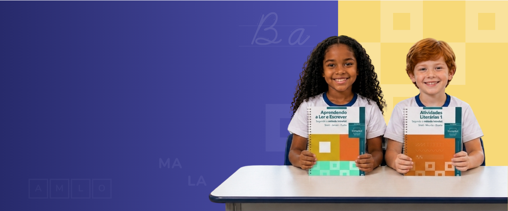
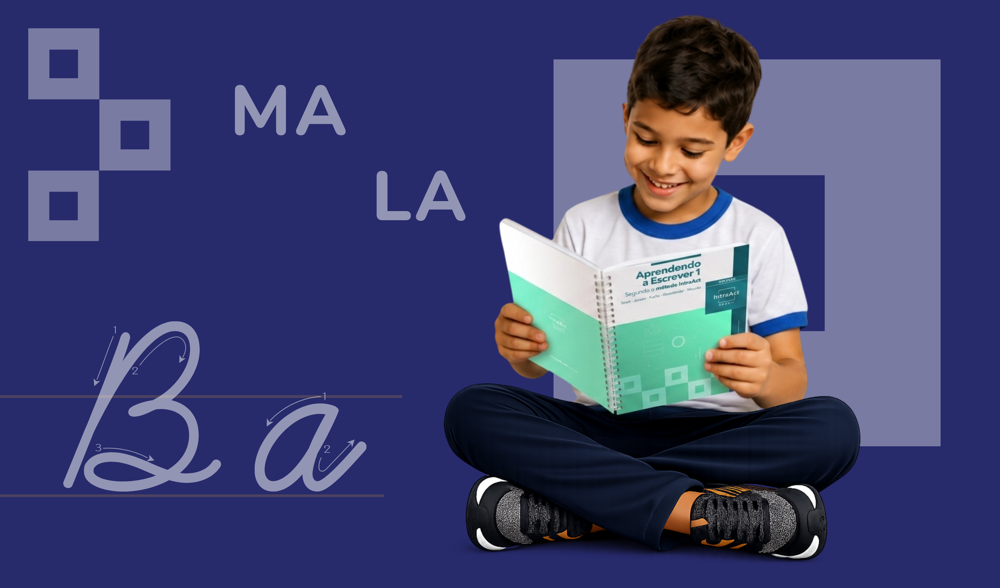

80%
dos alunos alfabetizados no 1º ano

Um método estruturado, baseado em neurociência cognitiva, que acelera a alfabetização com segurança, fluência e resultados comprovados.
Apenas 66% das crianças do 2º ano do Ensino Fundamental da rede pública estavam alfabetizadas em 2025.
1 em cada 3 alunos inicia sua trajetória escolar sem desenvolver plenamente a leitura e a escrita.
Quando a alfabetização não acontece no tempo certo, as dificuldades acompanham o aluno ao longo da vida escolar.
Metodologia baseada em neurociência cognitiva que fortalece a alfabetização com segurança, fluência e acompanhamento contínuo.

80%
dos alunos alfabetizados no 1º ano
4 a 5 meses
para a aprendizagem da leitura
45 minutos
de ensino estruturado por dia
CNCA
metodologia alinhada ao CNCA
Desenvolvido pelos alemães Uta Streit e Dr. Fritz Jansen, o Método IntraAct organiza o ensino respeitando o funcionamento natural do cérebro durante a aprendizagem da leitura e da escrita.
O aluno compreende os sons antes dos grafemas, fortalecendo a consciência fonológica e a associação correta entre letras e sons.
Os conteúdos são apresentados em pequenas etapas, reduzindo a sobrecarga cognitiva e favorecendo a automatização da leitura.
Recursos visuais que auxiliam na organização das informações e fortalecem sua consolidação na memória de longo prazo.
Direciona a atenção visual do estudante e contribui para o desenvolvimento gradual da fluência leitora.
Progressão estruturada que respeita o ritmo da aprendizagem e fortalece o processo de alfabetização.
Os conteúdos são apresentados em pequenas etapas, facilitando a assimilação e a retenção das novas habilidades.
A criança compreende os sons da fala antes de automatizar a leitura, fortalecendo a consciência fonológica.
A prática estruturada reforça a memória e consolida a aprendizagem sem gerar sobrecarga cognitiva.

A criança evolui com mais confiança e participação no processo de aprendizagem.
A leitura torna-se cada vez mais natural, rápida e automática.
O estudante desenvolve independência para avançar em novas aprendizagens.
A evolução dos alunos fortalece a confiança e o engajamento dos educadores.
Os avanços tornam-se perceptíveis e fortalecem a parceria entre escola e família.
A aprendizagem evolui de forma progressiva, sólida e sustentável.
Desenvolve as habilidades fundamentais de leitura e escrita por meio de atividades progressivas, práticas e alinhadas ao processo de alfabetização.

Aprofunda a consolidação da leitura e da escrita, promovendo maior fluência, compreensão textual e autonomia dos estudantes.

Material de apoio que reúne orientações didáticas, estratégias de aplicação e acompanhamento pedagógico para cada etapa da metodologia.

A implementação do Método IntraAct é acompanhada por uma estrutura de formação, suporte e monitoramento que apoia gestores e educadores em todas as etapas do processo de alfabetização.
Formação docente com capacitação prática
Formações gravadas com certificado
Avaliações para acompanhar progresso
Relatórios com dados claros
Atendimento ágil para suporte direto
Acompanhamento
pedagógico
Plantões para esclarecimento de dúvidas
Grupo de WhatsApp com apoio diário